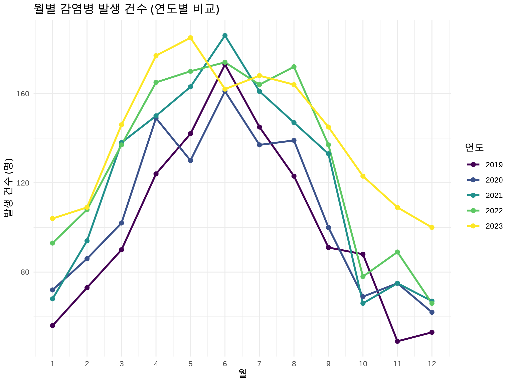
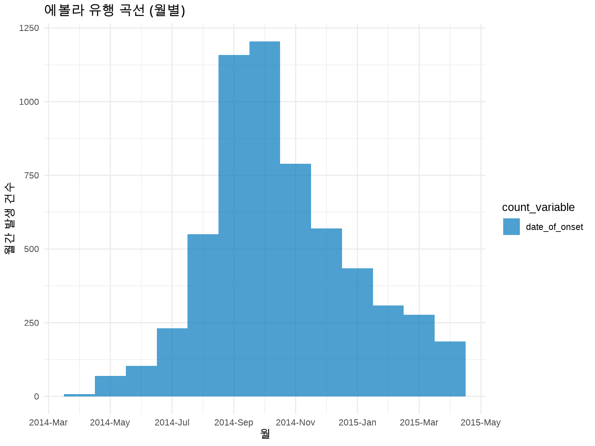
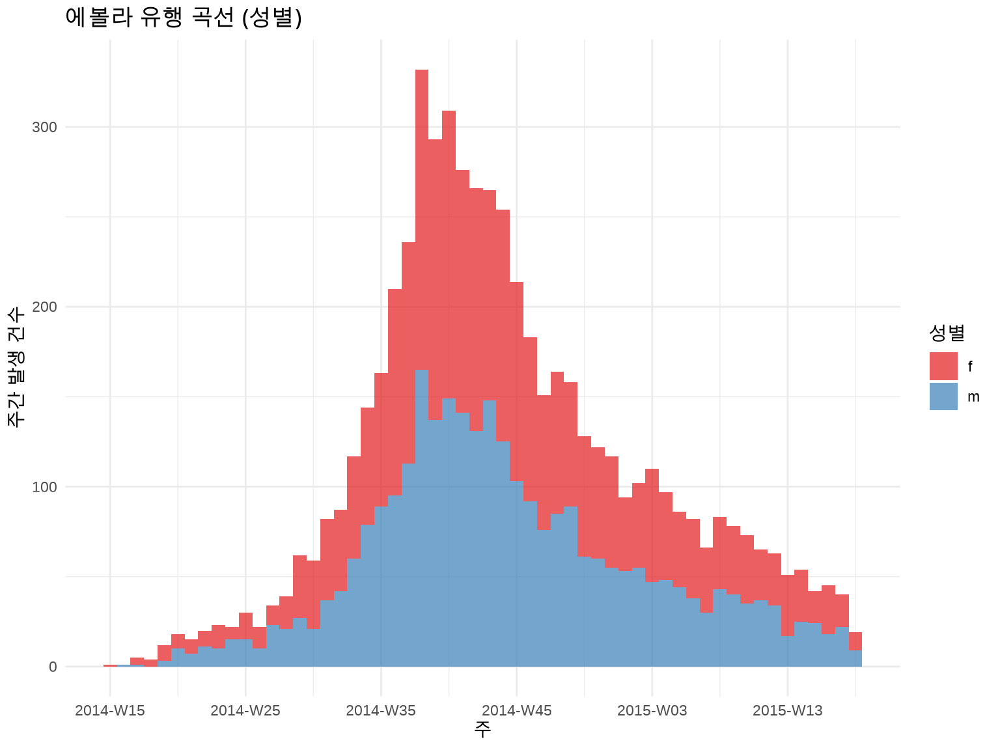
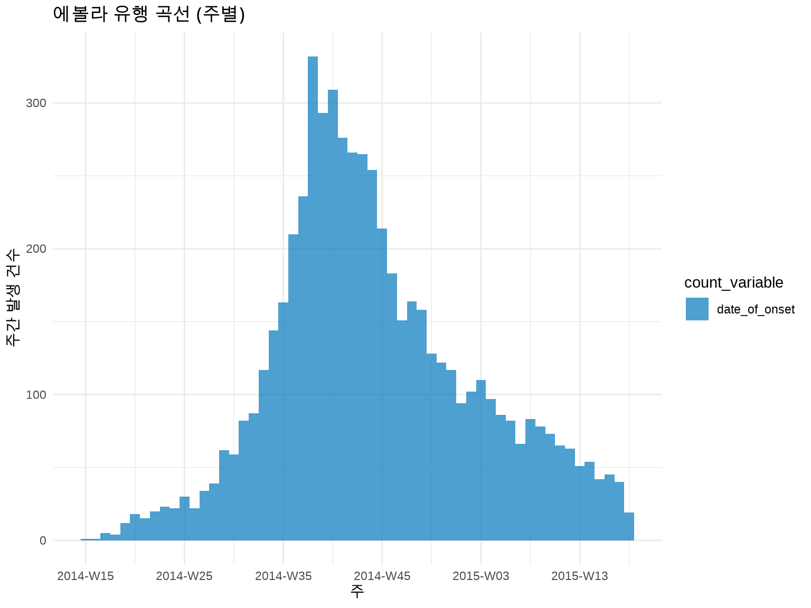

library(tidyverse)library(incidence2)library(outbreaks)# 실습 데이터 1: 질병 발생률disease<-read_csv(here("data", "processed", "disease_incidence.csv"))# 실습 데이터 2: 에볼라 유행 (outbreaks 패키지)data("ebola_sim", package ="outbreaks")linelist<-ebola_sim$linelist# 실습 데이터 3: 지역별 질병 데이터regional<-read_csv(here("data", "processed", "regional_disease.csv"))
5.1 3.1 역학 지표의 이해
5.1.1 3.1.1 발병률 vs. 유병률
역학 연구에서 가장 기본이 되는 두 지표입니다.
발병률 (Incidence) - 정의: 일정 기간 동안 새롭게 발생한 질병 사례의 비율 - 분자: 새로운 환자 수 - 분모: 위험 인구 (at-risk population) - 의미: 질병의 발생 속도 (동적) - 예시: “2024년 한 해 동안 인구 10만 명당 50명이 당뇨병으로 새롭게 진단”
유병률 (Prevalence) - 정의: 특정 시점에 질병을 가진 사람의 비율 - 분자: 기존 + 신규 환자 수 - 분모: 전체 인구 - 의미: 질병의 부담 (정적) - 예시: “2024년 12월 31일 현재, 인구의 8%가 당뇨병 환자”
관계:
유병률 ≈ 발병률 × 평균 질병 기간
💡 언제 어떤 지표를 사용할까?
상황
사용 지표
이유
급성 감염병 (독감, COVID-19)
발병률
빠른 발생 & 회복/사망
만성 질환 (당뇨, 고혈압)
유병률
장기간 지속
병인 연구 (원인 탐색)
발병률
시간 순서 파악
보건 자원 계획
유병률
현재 부담 측정
백신 효과 평가
발병률
새로운 감염 예방
5.1.2 3.1.2 발병률의 종류
1) 누적 발병률 (Cumulative Incidence)
일정 기간 동안 질병에 걸린 사람의 비율입니다.
누적 발병률 = (새로운 환자 수) / (관찰 시작 시점의 위험 인구)
예제:
1,000명을 1년간 추적 → 50명 발병누적 발병률 =50/1,000=5% (또는 0.05)
2) 발병 밀도 (Incidence Density / Incidence Rate)
인구-시간(person-time)을 고려한 발병률입니다.
발병 밀도 = (새로운 환자 수) / (관찰 인년, person-years)
예제:
1,000명을 추적했는데:-500명:1년 전체 → 500 person-years-300명:6개월만 → 150 person-years-200명:3개월만 → 50 person-years총 인년 =700 person-years50명 발병 → 발병 밀도 =50/700=7.14 per 100 person-years
🔥 Person-Years가 왜 필요한가?
코호트 연구에서 모든 참가자를 같은 기간 추적하기 어렵습니다: - 중도 탈락 (lost to follow-up) - 사망 - 이사 - 연구 중간 참여
역학 데이터는 항상 불확실성을 동반합니다. 신뢰구간(Confidence Interval)을 시각화하는 것이 중요합니다.
방법 1: 리본 (geom_ribbon)
# 발병률 + 95% 신뢰구간disease_with_ci<-disease%>%mutate( rate =cases/population*100000, # 인구 10만 명당# 포아송 분포 가정 95% CI se =sqrt(cases)/population*100000, lower_ci =rate-1.96*se, upper_ci =rate+1.96*se)ggplot(disease_with_ci, aes(x =month, y =rate))+geom_ribbon(aes(ymin =lower_ci, ymax =upper_ci), fill ="steelblue", alpha =0.3)+geom_line(linewidth =1, color ="darkblue")+geom_point(size =2, color ="darkblue")+labs(title ="월별 발병률 (95% 신뢰구간)", x ="월", y ="발병률 (per 100,000)")+scale_x_continuous(breaks =1:12)+theme_minimal()

방법 2: 에러 바 (geom_errorbar)
ggplot(disease_with_ci, aes(x =month, y =rate))+geom_errorbar(aes(ymin =lower_ci, ymax =upper_ci), width =0.3, color ="gray50")+geom_line(linewidth =1, color ="darkblue")+geom_point(size =3, color ="darkblue")+labs(title ="월별 발병률 (95% CI, Error Bars)", x ="월", y ="발병률 (per 100,000)")+scale_x_continuous(breaks =1:12)+theme_minimal()
# 주별 유행 곡선 (더 부드러운 패턴)inc_weekly<-incidence(linelist, date_index ="date_of_onset", interval ="week"# 주 단위)plot(inc_weekly)+labs(title ="에볼라 유행 곡선 (주별)", x ="주", y ="주간 발생 건수")+theme_minimal()
# 월별 유행 곡선inc_monthly<-incidence(linelist, date_index ="date_of_onset", interval ="month")plot(inc_monthly)+labs(title ="에볼라 유행 곡선 (월별)", x ="월", y ="월간 발생 건수")+theme_minimal()

💡 시간 단위 선택 가이드
시간 단위
적합한 상황
예시
일 (day)
급성 발병, 짧은 유행
식중독, 단기 감염병
주 (week)
일반적 감염병
인플루엔자, COVID-19
월 (month)
장기 추세, 만성 질환
결핵, 암 발생률
경험 법칙: 전체 유행 기간을 50-100개 막대로 나타낼 수 있는 단위 선택
5.3.4 3.3.4 그룹별 층화 분석
성별로 구분:
inc_by_gender<-incidence(linelist, date_index ="date_of_onset", interval ="week", groups ="gender"# 성별로 그룹화)plot(inc_by_gender, fill ="gender")+scale_fill_brewer(palette ="Set1", labels =c("F"="여성", "M"="남성"))+labs(title ="에볼라 유행 곡선 (성별)", x ="주", y ="주간 발생 건수", fill ="성별")+theme_minimal()

지역별로 구분 + Facet:
inc_by_hospital<-incidence(linelist, date_index ="date_of_onset", interval ="week", groups ="hospital")# 상위 4개 병원만 표시top_hospitals<-linelist%>%count(hospital, sort =TRUE)%>%head(4)%>%pull(hospital)inc_by_hospital%>%as_tibble()%>%filter(hospital%in%top_hospitals)%>%ggplot(aes(x =date_index, y =count))+geom_col(fill ="steelblue")+facet_wrap(~hospital, ncol =2, scales ="free_y")+labs(title ="에볼라 유행 곡선 (병원별)", x ="날짜", y ="주간 발생 건수")+theme_minimal()

5.3.5 3.3.5 유행 단계 표시
많은 감염병 유행은 상승기 - 정점 - 하강기 패턴을 보입니다. 이를 시각적으로 구분하면 유용합니다.
# 유행 정점 찾기inc_weekly_df<-as_tibble(inc_weekly)peak_date<-inc_weekly_df$date_index[which.max(inc_weekly_df$count)]# 상승기/하강기 구분inc_weekly_df<-inc_weekly_df%>%mutate(phase =if_else(date_index<peak_date, "상승기", "하강기"))ggplot(inc_weekly_df, aes(x =date_index, y =count, fill =phase))+geom_col()+geom_vline(xintercept =peak_date, linetype ="dashed", color ="red", linewidth =1)+annotate("text", x =peak_date, y =max(inc_weekly_df$count)*0.9, label =paste("정점:", format(peak_date, "%Y-%m-%d")), color ="red", hjust =-0.1)+scale_fill_manual(values =c("상승기"="#FF6B6B", "하강기"="#4ECDC4"))+labs(title ="에볼라 유행 단계", x ="주", y ="주간 발생 건수", fill ="유행 단계")+theme_minimal()
5.3.6 3.3.6 배가 시간 (Doubling Time) 계산
유행 초기의 성장 속도를 평가합니다.
library(incidence2)# 상승기 데이터만 추출growth_phase<-inc_weekly_df%>%filter(phase=="상승기", count>0)# 로그-선형 회귀model<-lm(log(count)~as.numeric(date_index), data =growth_phase)growth_rate<-coef(model)[2]# 일일 성장률# 배가 시간 (일)doubling_time<-log(2)/growth_ratecat("배가 시간:", round(doubling_time), "일\n")
#> 배가 시간: 3 일
5.4 3.4 연령 표준화 비율 (Age-Standardized Rate)
5.4.1 3.4.1 왜 표준화가 필요한가?
두 지역의 암 사망률을 비교한다고 가정합시다:
지역
조사망률 (crude rate)
65세 이상 비율
A 지역
500 per 100,000
15%
B 지역
600 per 100,000
30%
질문: B 지역이 더 위험한가?
답: 아닙니다! B 지역은 고령 인구가 많아서 조사망률이 높을 수 있습니다.
해결책: 연령 구조의 영향을 제거한 연령 표준화 비율 사용
5.4.2 3.4.2 직접 표준화 (Direct Standardization)
원리: 모든 인구를 동일한 표준 인구 구조로 가정
ASR = Σ(연령군별 발생률 × 표준 인구 비율)
예제: 수동 계산
library(tidyverse)# 두 지역의 연령별 발생 데이터region_data<-tribble(~region, ~age_group, ~cases, ~population,"A", "0-19", 10, 50000,"A", "20-39", 30, 40000,"A", "40-59", 50, 30000,"A", "60+", 100, 20000,"B", "0-19", 15, 30000,"B", "20-39", 40, 35000,"B", "40-59", 80, 40000,"B", "60+", 150, 45000)# WHO 세계 표준 인구 (간소화 버전)standard_pop<-tribble(~age_group, ~std_pop,"0-19", 0.30,"20-39", 0.28,"40-59", 0.25,"60+", 0.17)# 연령별 발생률 계산region_data<-region_data%>%mutate(rate =cases/population*100000)# 표준화 비율 계산asr<-region_data%>%left_join(standard_pop, by ="age_group")%>%group_by(region)%>%summarize(asr =sum(rate*std_pop))print(asr)
#> # A tibble: 2 × 2
#> region asr
#> <chr> <dbl>
#> 1 A 154.
#> 2 B 154.
이제 B 지역이 실제로 더 높은 발생률을 보입니다 (연령 구조 조정 후).
5.4.3 3.4.3 간접 표준화 (Indirect Standardization)
표준 인구의 연령별 발생률을 사용합니다. 표준화 사망비(SMR)로 표현됩니다.
SMR = 관찰 사례 수 / 기대 사례 수
# 표준 발생률 (전국 평균)standard_rates<-tribble(~age_group, ~std_rate,"0-19", 20,"20-39", 75,"40-59", 167,"60+", 588)# 기대 사례 수 계산expected<-region_data%>%left_join(standard_rates, by ="age_group")%>%mutate(expected_cases =population*std_rate/100000)%>%group_by(region)%>%summarize( observed =sum(cases), expected =sum(expected_cases), smr =observed/expected)print(expected)
#> # A tibble: 2 × 4
#> region observed expected smr
#> <chr> <dbl> <dbl> <dbl>
#> 1 A 190 208. 0.915
#> 2 B 285 364. 0.784
library(incidence2)library(outbreaks)linelist<-ebola_sim$linelistinc_monthly_gender<-incidence(linelist, date_index ="date_of_onset", interval ="month", groups ="gender")plot(inc_monthly_gender, fill ="gender", stack =TRUE)+scale_fill_brewer(palette ="Set1", labels =c("F"="여성", "M"="남성"))+labs(title ="에볼라 유행 곡선 (월별, 성별)", x ="월", y ="월간 발생 건수", fill ="성별")+theme_minimal()